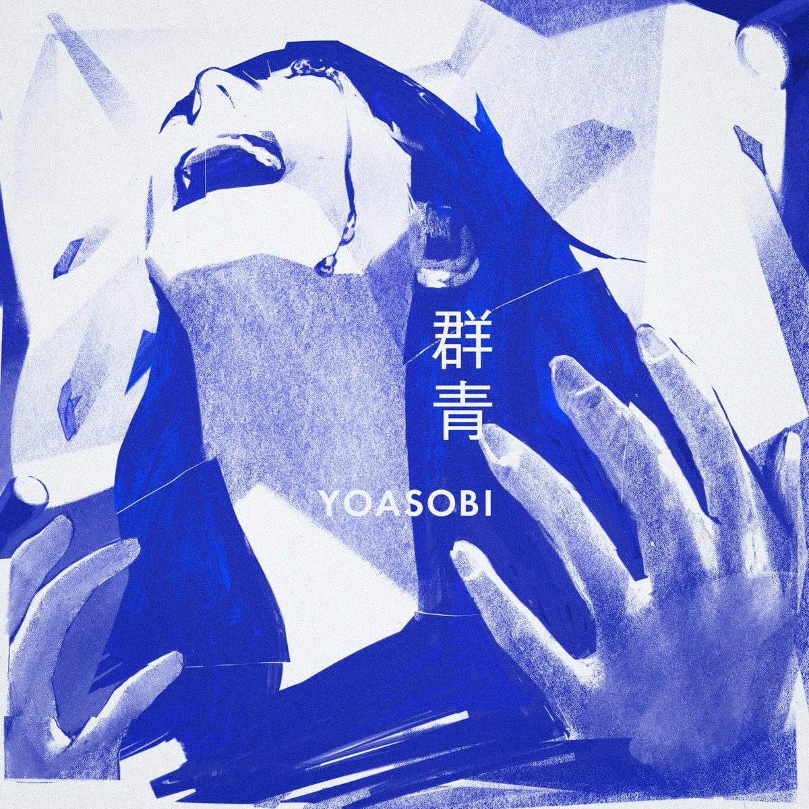

大狐帝国史官邹智萱（笔名段歌文）
@Rococo90933671
第一次听这首歌，还是四年前上大二的时候。
因为刚好在一年后休学以后才正式开始学日语，所以那时候只能看翻译才能完全看懂，或者看汉字看得一知半解。
而现在虽然没法完全靠自己看懂，总有不认识的词，但是根据翻译，也完全知道原歌词的结构是怎么回事了，比如某个假名是一个助词，还是一个单词的组成部分。
所以，以前那种只看汉字辨认意思的朦胧感反而找不到了，就像学会骑单车以后，找不回不会骑的感觉一样。
所有的日语歌同理。
那段回忆也是不可复制的啊，我没有好好珍惜啊……这是最让人痛心的，符合这张封面🥹
